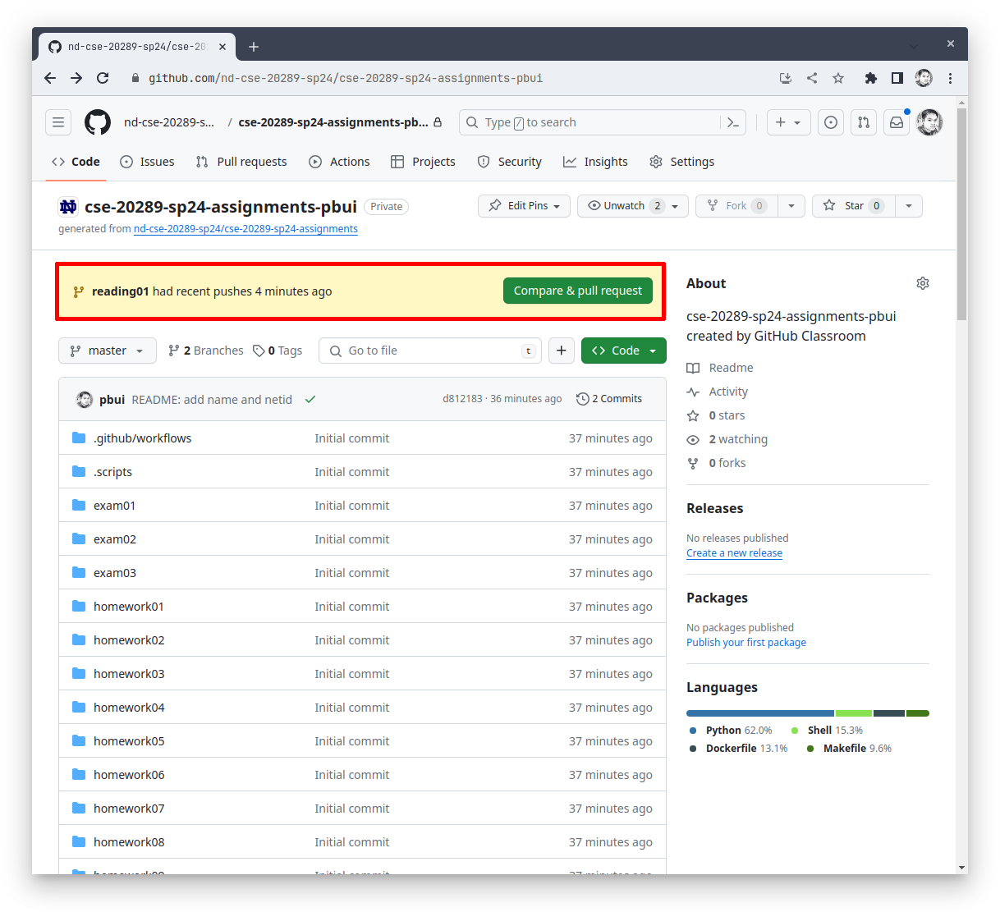
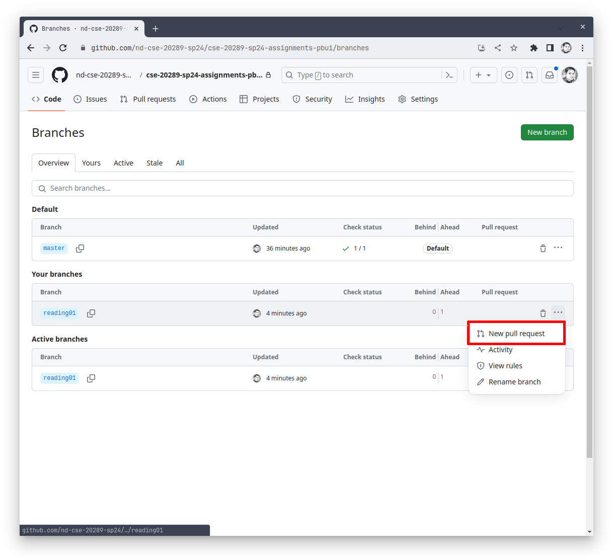
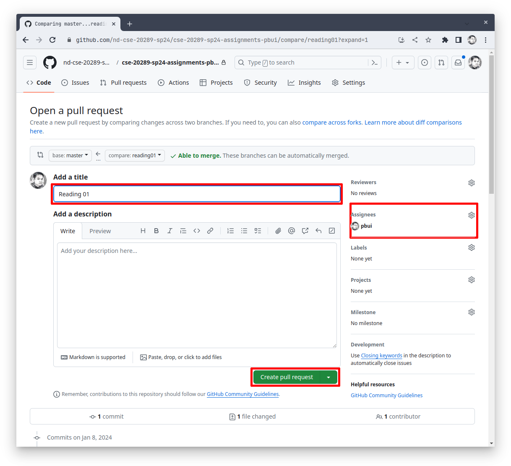
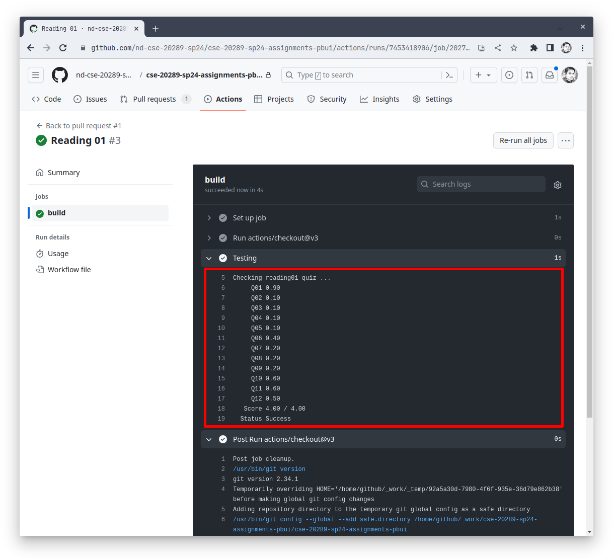

Reading 01: Using the Shell
Everyone:
Next week, we will explore how to use some of the more advanced features of the Unix shell, including how to manipulate files and control processes, which are two fundamental abstractions the Unix operating system provides to the end user. You are also encouraged to learn more about a particular text editor of your choice such as vim, emacs, or nano.
TL;DR¶
The focus of this reading is to review the basics of manipulating files and processes in the Unix Shell.
Branching¶
As discussed in class, each reading and homework assignment must be completed in its own git branch; this will allow you to separate the work of each assignment and for you to use the Pull Request workflow describe at the end of this document.
To create a branch in your local repository, follow the instructions below:
$ cd path/to/cse-20289-sp24-assignments # Go to assignments repository
$ git switch master # Make sure we are in master branch
$ git pull --rebase # Make sure we are up-to-date with GitHub
$ git checkout -b reading01 # Create reading01 branch and check it out
$ cd reading01 # Go into reading01 folder
Once these commands have been successfully performed, you are now ready to add, commit, and push any work required for this assignment.
Branching off Master¶
For the assignments in this class, you should always branch off the master branch. To determine which branch you are on, you can do the following:
$ git branch
To create and switch to a new branch, you can use the git checkout -b
BRANCH as described above. Once you have performed this command, you can
check which branch you are on:
$ git branch
master
* reading01
To change to another existing branch, you can use the git switch BRANCH
command. Suppose you are on the reading01 branch and want to switch back
to the master branch. To do so, you can do the following:
$ git switch master
Before switching branches, however, you may wish to commit your work or at the very least stash it.
Python 3¶
Throughout the semester, we will be using Python 3 for a variety of
purposes. Because the student machines an older version of Python 3 by
default, you will need to add the following line to your ~/.bashrc file:
export PATH=/escnfs/home/pbui/pub/pkgsrc/bin:$PATH
You can then source this file to load that environment variable:
$ source ~/.bashrc
To check that Python 3 works, you can run the following:
$ python3 -V
Python 3.11.2
This will be necessary for the .scripts/check.py script in your
assignments repository.
Python Packages¶
If you wish to use your local machine for your work, you will need Python 3, Requests, and PyYAML.
Once you have Python 3 installed, you can install the later two packages by doing:
$ pip3 install requests pyyaml
Alternatively, you can use the Anaconda distribution of Python 3, which will include the interpreter along with many other libraries including Requests and PyYAML.

Readings¶
The readings for Monday, January 22 are:
-
- Chapter 6 - Redirection
- Chapter 7 - Seeing the World as the Shell Sees it
- Chapter 8 - Advanced Keyboard Tricks
- Chapter 9 - Permissions
- Chapter 10 - Processes
In addition to reading the above chapters, it is recommended that you learn a command-line text editor such as one of the following:
-
nano: This text editor is the easiest to get started with, but also has the least amount of features. It is what I recommend for newcomers to Linux.
-
vim: This text editor has many features such as syntax highlighting, plugins, and even spell checking. That said, it has a steep learning curve due to its foreign keyboard interface.
- Chapter 12 - A Gentle Introduction to Vi of The Linux Command Line
- Getting Started with Vim Editor in Linux
-
emacs: This text editor also has many features (perhaps too many). In fact, Emacs is so powerful, there is saying "Emacs is an excellent operating system. All it's missing is a decent text editor". Bazinga!
This is my editor¶
All joking aside, your exact choice in a text editor is not important.
What is important, however, is that you become comfortable with at least one
of them and are capable of editting text efficiently in terminal. As the
creed goes:
This is my editor. There are many like it, but this one is mine.
My editor is my best friend. It is my life. I must master it as I must master my life.
Without me, my editor is useless. Without my editor, I am useless.
Optional References¶
The following are additional resources that you may find useful:
Quiz¶
Once you have completed the readings, answer the following Reading 01 Quiz questions:
Submission¶
To submit your answers, you will need to create an answers.json file in the
reading01 folder of your assignments repository:
-
If you have not already, follow the instructions at the top of this document to create a
reading01branch in your assignments Git repository. -
You can either hand-write the
answers.jsonfile using your favorite text editor or you can use the online form to generate the JSON data, which should look like the following:{ "q01": [ "stdin", "stdout", "stderr" ], "q02": "yes", "q03": [ "a", "b" ], "q04": [ "a", "b" ], "q05": [ "c" ], "q06": [ "ls" ], "q07": [ "beastie" ], "q08": [ "beastie" ], "q09": [ "beastie" ], "q10": [ "800" ], "q11": [ "b" ], "q12": [ "homeworks" ] }To determine which symbols correspond to which response, take a look at the Reading 01 Quiz file.
To check your answers, you can use the provided
.scripts/check.pyscript:$ cd reading01 # Go into reading01 folder $ $EDITOR answers.json # Edit your answers.json file $ ../.scripts/check.py # Check reading01 quiz Checking reading01 quiz ... Q01 0.90 Q02 0.10 Q03 0.10 Q04 0.10 Q05 0.10 Q06 0.40 Q07 0.20 Q08 0.20 Q09 0.20 Q10 0.60 Q11 0.60 Q12 0.50 Score 4.00 / 4.00 Status SuccessThis script will check your responses by sending your
reading01/answers.jsonfile to dredd, which is the automated grading system. dredd will take your answers and return to you a score and overall status as shown above.Note: TheScoredenotes how many points you received out of the maximum number of attempted points, whileStatusisSuccessif you have achieved full credit (otherwise, it will showFailure). -
Once you have your
answersfile, you need to add, commit the file, and push your commits to GitHub:$ git add answers.json # Add answers.json to staging area $ git commit -m "Reading 01: Done" # Commit work $ git push -u origin reading01 # Push branch to GitHubIterative Approach¶
You may edit and commit changes to your branch as many times as you wish. Just make sure all of your work goes in the appropriate branch and then perform a
git pushwhen you are done. -
When you are ready for your final submission, you need to create a Pull Request via the GitHub interface:
-
If you have a Compare & pull request button corresponding to your
reading01branch on your repository page, then you can click on that button. -
If you do not have the Compare & pull request button, then go to your repository's Branches page and then press the New pull request button for the appropriate branch:
 -
Next, edit the Pull Request title to "Reading 01", write a comment if necessary, assign the appropriate TA, and then press the "Create pull request" button.
 -
Every commit on GitHub will automatically submit your quiz or code to dredd and the results of each run is displayed in the Checks tab of each commit as shown below:

-
Once you have made the Pull Request, the TA can verify your work and provide feedback via the discussion form inside the Pull Request. If necessary, you can update your submission by simply commit and pushing to the appropriate branch; the Pull Request will automatically be updated to match your latest work.
Pull Request¶
Remember to create a Pull Request and assign the appropriate TA from the Reading 01 TA List.
This list changes each week, so be sure to consult the appropriate list for each assignment.
DO NOT MERGE your own Pull Requests. The TAs use open Pull Requests to keep track of which assignments to grade. Closing them yourself will cause a delay in grading and confuse the TAs.